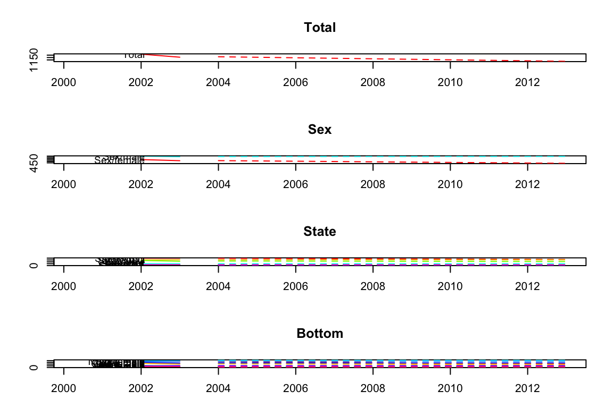

This is just a quick reproduction of the items discussed in the hts package. This allows for hierarchical time series which is an important feature when looking at data that take a hierarchical format like counties within a state or precincts within counties within states.
The mission is to reproduce the figures in the following article:
https://cran.r-project.org/web/packages/hts/vignettes/hts.pdf
library(hts)This is important to understand in regard to how to format the data.
# bts is a time series matrix containing the bottom-level series
# The first three series belong to one group, and the last two
# series belong to a different group
# nodes is a list containing the number of child nodes at each level.
bts <- ts(5 + matrix(sort(rnorm(500)), ncol=5, nrow=100))
y <- hts(bts, nodes=list(2, c(3, 2)))
infantgts
Grouped Time Series
4 Levels
Number of groups at each level: 1 2 8 16
Total number of series: 27
Number of observations per series: 71
Top level series:
Time Series:
Start = 1933
End = 2003
Frequency = 1
[1] 4426 4795 4501 4813 4572 4627 4726 4897 5367 5435 5458 4819 4741
[14] 5143 5231 4978 4621 4672 4910 4823 4743 4546 4571 4630 4751 4586
[27] 4915 4667 4700 4861 4652 4403 4124 4065 4205 4293 4507 4620 4809
[40] 4465 4088 3974 3341 3161 2834 2732 2557 2438 2365 2485 2349 2184
[53] 2473 2162 2131 2143 2018 2149 1851 1848 1598 1524 1466 1467 1352
[66] 1261 1413 1292 1313 1271 1207Use a bottom’s up forcasting method. There are several options from which to choose:
# Forecast 10-step-ahead using the bottom-up method
infantforecast <- forecast(infantgts, h=10, method="bu")Now we can plot them:
# plot the forecasts including the last ten historical years
plot(infantforecast, include=2)
allts_infant <- aggts(infantgts)
allf <- matrix(nrow=10, ncol=ncol(allts_infant))
# Users can select their preferred time-series forecasting method
# for each time series
for(i in 1:ncol(allts_infant)){
allf[,i] <- forecast(auto.arima(allts_infant[,i]), h=10, PI=FALSE)$mean
}
allf <- ts(allf, start=2004)
# combine the forecasts with the group matrix to get a gts object
g <- matrix(c(rep(1, 8), rep(2, 8), rep(1:8, 2)), nrow = 2, byrow = T)
y.f <- combinef(allf, groups = g)
# set up the training sample and testing sample
data <- window(infantgts, start=1933, end=1993)
test <- window(infantgts, start=1994, end=2003)
forecast <- forecast(data, h=10, method="bu")
# calculate ME, RMSE, MAE, MAPE, MPE and MASE
accuracy.gts(forecast, test)
Total Sex/female Sex/male State/NSW State/VIC
ME -229.976631 -51.6732083 -178.303422 -61.6997671 -52.3224384
RMSE 239.316716 54.8648206 186.952910 72.0726053 55.6797769
MAE 229.976631 51.6732083 178.303422 61.6997671 52.3224384
MAPE 17.383377 8.8573610 24.108196 14.8044550 17.2578539
MPE -17.383377 -8.8573610 -24.108196 -14.8044550 -17.2578539
MASE 1.192825 0.5536415 1.634811 0.6922188 0.7123545
State/QLD State/SA State/WA State/NT State/ACT State/TAS
ME -54.247885 -27.9688770 -34.22604 2.4214262 -10.200366 8.2673186
RMSE 58.364656 31.4104773 37.80624 4.4008195 12.277985 14.1318898
MAE 54.247885 28.3351016 34.22604 3.8128557 10.200366 11.2456064
MAPE 19.807669 35.8611517 30.49142 9.3990903 58.625236 25.6532905
MPE -19.807669 -35.5481392 -30.49142 5.5716727 -58.625236 16.2664231
MASE 1.170397 0.9229675 1.18361 0.3087333 1.577376 0.4954012
NSW female VIC female QLD female SA female WA female
ME 18.1060219 -19.2448216 -30.927587 -11.8395741 -9.4619072
RMSE 29.4705103 22.4856212 34.825359 12.7759741 12.2693801
MAE 22.6345181 19.2448216 30.927587 11.8395741 11.0295258
MAPE 11.8532079 15.1713621 27.492021 34.9177563 23.1348356
MPE 9.1030614 -15.1713621 -27.492021 -34.9177563 -20.8629247
MASE 0.5199353 0.5338369 1.059769 0.6720666 0.6308594
NT female ACT female TAS female NSW male VIC male
ME -3.6619739 1.2229746 4.1336593 -79.805789 -33.0776168
RMSE 5.4356560 4.3972340 7.0659449 85.657539 35.4311830
MAE 4.1036140 3.8000000 5.6228032 79.805789 33.0776168
MAPE 31.0793050 49.8490801 25.6532905 34.527431 19.3380825
MPE -29.2280894 -15.2907568 16.2664231 -34.527431 -19.3380825
MASE 0.5766202 0.9047619 0.4954012 1.431922 0.7569249
QLD male SA male WA male NT male ACT male
ME -23.3202978 -16.1293029 -24.764134 6.083400 -11.423341
RMSE 27.7367318 20.5563716 28.118008 8.673554 12.089644
MAE 23.3202978 17.9634424 25.771308 7.729126 11.423341
MAPE 15.3395187 43.6968568 42.005272 34.820043 106.448479
MPE -15.3395187 -41.2835155 -40.987925 22.160616 -106.448479
MASE 0.9676472 0.9396744 1.577835 1.120163 2.269538
TAS male
ME 4.1336593
RMSE 7.0659449
MAE 5.6228032
MAPE 25.6532905
MPE 16.2664231
MASE 0.4954012
fcasts <- forecast(htseg1, h = 10, method = "comb", fmethod = "arima",
weights = "sd", keep.fitted = TRUE, parallel = TRUE)